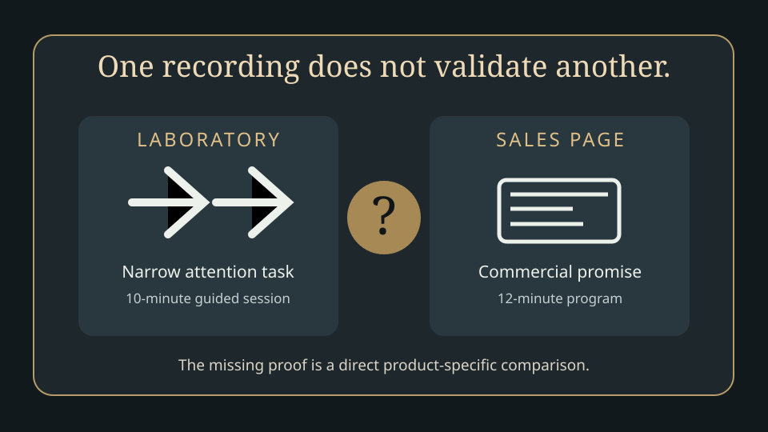

The Mind & Perception Archive / Independent buyer guide
Twelve minutes, a bigger promise.
One brief laboratory study found improvements on particular attention tasks after a ten-minute meditation recording. That is interesting. It is not proof that a commercial twelve-minute audio can replace an hour of meditation.
Before paying for an audio routine, learn what the seller actually includes, what the research really tested, and how to keep your own observations separate from a promise.
The experiment worth reading
In two 2018 experiments, Norris and colleagues randomly assigned meditation novices to a brief guided recording or a comparison activity. They found improvements on specified laboratory attention measures in the meditation groups, with individual differences shaping results. One outcome was accuracy under conflicting arrow distractions; another measured responses on an attention-network task. Neither group tested Zen12 or a twelve-month paid program.
The investigators reported results on constrained tests shortly after listening. They did not measure what a specific paid audio would do in daily work, nor establish that twelve minutes equals an hour of practice. A 2018 corrigendum corrected an affiliation rather than the scientific findings. Read the original paper.
Scientific evidence for an activity is not automatically evidence for a particular seller's recording or its claimed mechanism.
What Zen12 says a buyer receives
12 levels
The seller describes a progression through twelve levels, with a full package spanning a year. Verify which package and levels apply to the checkout you are actually offered.
Four listening styles
Guided meditation, music, nature sounds and white noise are described for each level; the complete seller-described library totals 48 MP3s.
Guidance and support
The seller lists a manual, a quick-start guide and support, and describes a one-year guarantee. Refund eligibility and payment terms require confirmation on the final checkout.
All package details above are seller descriptions from the reviewed Zen12 site, not an independently purchased or experienced product. No current price is quoted because seller paths differ; this page contains no merchant link.
What the product page does not establish for us
The site's promises about brainwave entrainment, effortless focus, health benefits and hour-equivalent meditation are promotional claims. A laboratory result involving a different guided recording cannot establish them. To substantiate a proprietary mechanism or real-work outcome, we would need a controlled product-specific study with suitable comparisons and measures matching the promise.
Other formats may suit other preferences: Hypnosis Live's Total Focus is seller-described as a 33-minute narrated hypnosis MP3, whereas Brainwave Shots' Focus Shot includes 15- and 30-minute audio versions. Those are different products; neither is proven equivalent by the Norris experiment. The broader Hypnosis Live catalog is not the Total Focus SKU.
Safety deserves humility too. NCCIH says meditation is usually viewed as low risk, but few studies have examined potentially harmful effects. A 2020 systematic review documents adverse experiences and important limitations in how they were measured. Distress is a reason to stop, not a test of dedication.
A free twelve-minute comparison
- Write down one small, observable task before you start. Record a start time and what would count as done.
- Spend two comfortable minutes noticing ordinary breath or environmental sounds. You may skip this if it is uncomfortable.
- Spend eight minutes on your selected task. Mark distractions on paper instead of judging yourself.
- Spend the final two minutes recording what happened: the completed step, interruptions and anything you cannot reasonably infer.
Repeat if useful, without treating one smooth session as a scientific verdict. The existing free 52-page Seven Day Focus Fieldbook has seven days of exercises, a thirty-day log and questions for assessing meditation audio. It uses the existing Dispatch/Jetpack subscription path—no extra list is created by this page.
Five questions that save a bad purchase
What is the precise package?
Full 48-track library or a limited tier? Download or recurring access? Compare the exact sales route, not just a headline.
Which benefits are measured?
Look for research on the actual product with a good control and a relevant everyday outcome.
Is the effect from the audio?
A break, expectation and pleasant sound may matter. The proprietary component needs its own test.
Are price and refund terms clear?
Check the final total, currency, upsells and applicable refund procedure before paying.
Would a free routine suffice?
Try the Fieldbook or an ordinary timer first. Personal preference does not require a purchase.
Optional merchant offer / not available
Consider Zen12 only after checking the evidence and terms
Zen12 may be worth comparing as a structured library for someone specifically seeking twelve-minute audio options, but no benefit or personal result is promised by Final Vestige. The source guide remains readable whether or not a commercial option is enabled.
Affiliate disclosure: If you purchase through a future earning link on this guide, Final Vestige may earn a commission at no additional cost to you. No earning link is active here because publisher approval, exact product permission and tracking terms have not been verified.
This control cannot take you to a merchant or record an affiliate click. We do not claim to have purchased, used or tested Zen12.
Why Final Vestige keeps two ledgers
The Puységur Animal Magnetism Files preserve eyewitness accounts, named patients, failed predictions and ethical contradictions from an eighteenth-century healing system. A signed record establishes that a statement was made; it does not verify the theory used to explain it. Likewise, a seller website records an offer, not independently demonstrated cognition or therapy. We keep the research record and commercial record apart.
For source detail, read the complete unpublished companion manuscript, Ten Minutes in the Lab Is Not Twelve Minutes at Checkout. Our published change-blindness investigation is another example of how a compelling demonstration needs careful boundaries.
An optional 42-second visual explanation
Unpublished film storyboard. No playable video is embedded in this page or included in this pull request. A separate silent 42-second MP4 prototype was encoded locally for review; it has no narration and is not a production player. A future release would require an original captioned 42-second video with controls, a poster, a transcript, no autoplay and verified media rights. The complete buyer guide above works without it.
Open the poster and complete narrated storyboard

- 00:00–00:07: A volunteer listens for ten minutes. A psychologist asks a narrow attention question.
- 00:07–00:14: A screen flashes conflicting arrows. The task measures responses, not a whole workday.
- 00:14–00:21: The study reports improvements in particular conditions. It does not test every audio program.
- 00:21–00:28: Now a product page promises twelve minutes can replace an hour. Where is that direct comparison?
- 00:28–00:35: Try a free twelve-minute task and write down what actually happened. Enjoyment is different from proof.
- 00:35–00:42: Read the study. Keep the question. Don't confuse the recording with the experiment.
Transcript: A volunteer listens for ten minutes. A psychologist asks a narrow attention question. A screen flashes conflicting arrows. The task measures responses, not a whole workday. The study reports improvements in particular conditions. It does not test every audio program. Now a product page promises twelve minutes can replace an hour. Where is that direct comparison? Try a free twelve-minute task and write down what actually happened. Enjoyment is different from proof. Read the study. Keep the question. Don't confuse the recording with the experiment.
Matching WebVTT captions are provided as a separate source file for future encoding and QA.